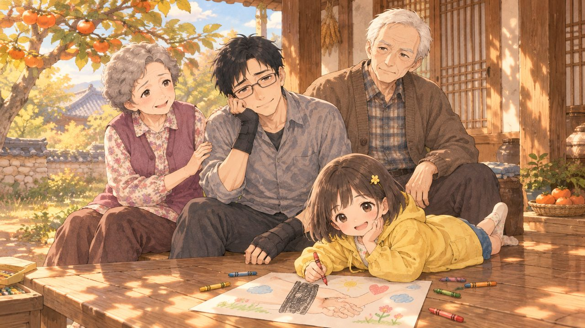

우리 아빠
사랑받지 못한다고 믿었던 아빠와, 그 아빠를 세상에 그려 보인 딸의 이야기. 전 5장.

사랑받지 못한다고 믿었던 아빠와, 그 아빠를 세상에 그려 보인 딸의 이야기. 전 5장.
A·B·C는 서로 기다릴 필요가 없어 동시에 진행한 작업입니다. D부터는 앞 단계가 끝나야 시작할 수 있습니다.
선택지는 결말을 가르지 않고 자존감 눈금(0~10, 시작 3)을 움직입니다. 자신을 탓하는 선택은 내려가고, 감정을 솔직히 인정하거나 도움을 받아들이는 선택은 올라갑니다. 4장의 반전에서 크게 오르며, 마지막 결혼식 장면의 한 줄이 눈금 8 이상인지에 따라 달라집니다. 어떤 길로 가도 해피엔딩에 닿는 구조라서 이야기의 감정선이 끊기지 않습니다.
모든 장면 프롬프트 앞에 붙여 그림체를 맞춥니다. 화면 비율은 16:9로 생성하세요.
인물이 나오는 장면마다 같은 묘사를 넣어야 얼굴과 옷이 유지됩니다.
대사창에 뜨는 인물 그림입니다. 장면 그림에서 얼굴을 맞추는 참조로도 썼습니다. 배경을 지운 파일을 images 폴더에 넣고 코드의 SPRITE 목록에 연결합니다. 표정은 같은 프롬프트 끝의 표정 단어만 바꿔 여러 장 뽑으세요.
끊김 없이 반복되는 연주곡 5곡입니다. 파일은 audio/ 폴더에 있고, 코드의 BGM 목록에서 장면별 곡을 바꿀 수 있습니다.
짧은 효과음 8종입니다. SFX 목록의 file 경로를 채우면 됩니다.